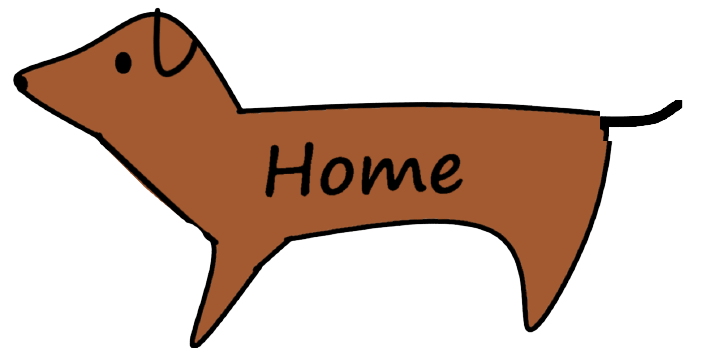
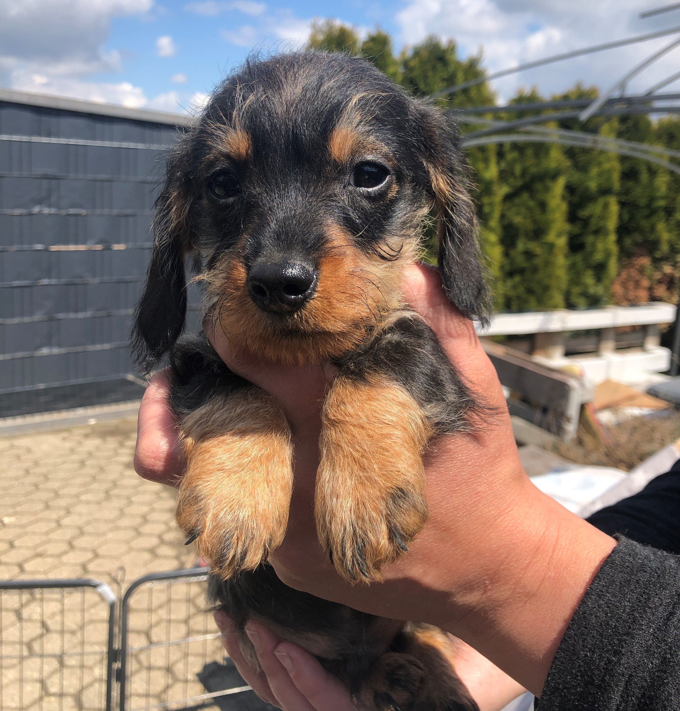

Das bin ich!
Hi! Ich bin Anton, ein Zwergrauhaardackel und wurde am 24.02.2021 geboren.
Seit dem 07.05.2021 lebe ich nun schon bei meiner neuen Familie in Aachen und entdecke immer weiter die Welt.

Ich bin sehr verspielt, brauche aber auch meine regelmäßigen Kuscheleinheiten.
Am liebsten bin ich draußen oder bei jemandem auf dem Schoß.
Ich wünsche euch viel Spaß beim Durchgucken dieser Seite.